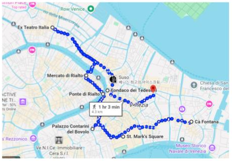
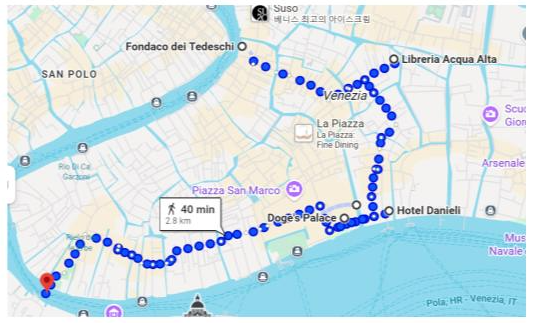

Recorrido:
Del hotel a Plaza San Marco, y desde ahí:

- Palazzo Contarini del Bovolo: famoso por su escalera de caracol con arcos venecianos. Vistas espectaculares desde lo alto de la Scala. ¡Imperdible!
- Puente de Rialto: construido entre 1588 y 1591, es el más antiguo y bonito de los cuatro puentes sobre el Gran Canal.
- Mercado de Rialto: máscaras venecianas, souvenirs de cristal de Murano, frutas y verduras.
- Ex Teatro Italia: supermercado lindo. Cerca está el Ghetto Judío (bajar en estación Marcuola del vaporetto).
- Fondaco dei Tedeschi: tenía vistas increíbles, aunque actualmente está cerrado.
- Librería Acqua Alta.

- Palacio Ducal: joya barroca imponente.
- Puente de los Suspiros: visible desde la Riva degli Schiavoni, famoso por la leyenda del último suspiro de los prisioneros.
- Hotel Danieli: visita imperdible.
- Ponte della Academia y recorrido por Dorsoduro, uno de los barrios más auténticos de Venecia: canales, silencio y magia.